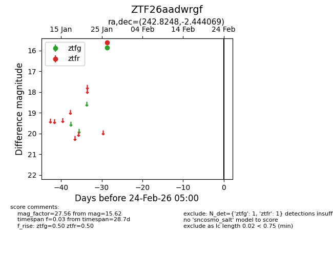
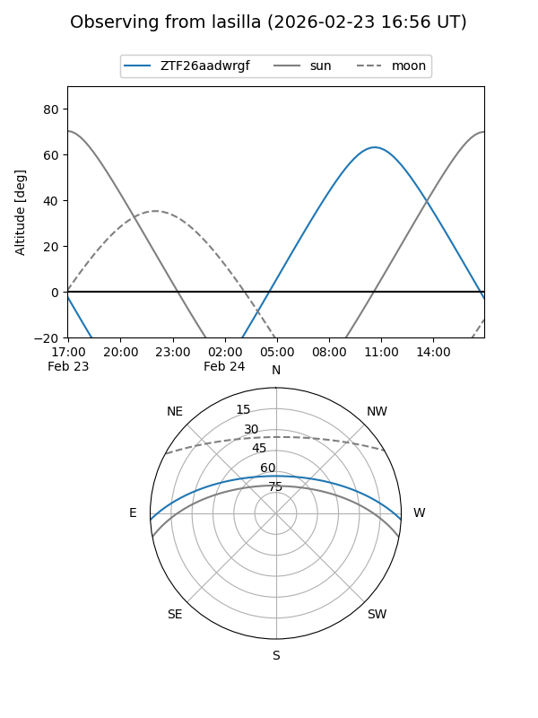
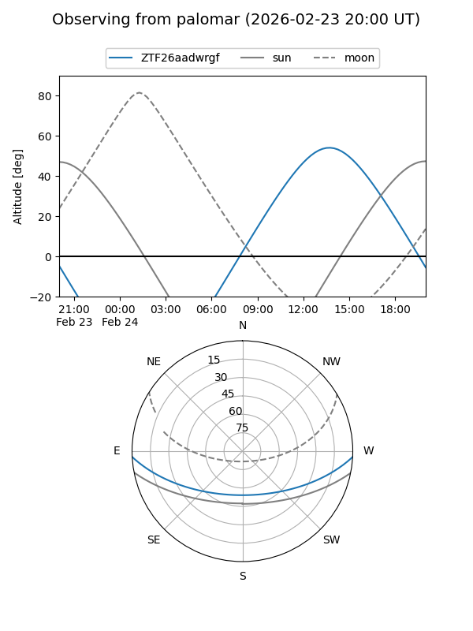

ZTF26aadwrgf
Target ZTF26aadwrgf at 2026-01-28 15:41
Aliases and brokers:
FINK: link
Lasair: link
ALeRCE: link
alt names
ZTF26aadwrgf (ztf,fink_ztf)
Coordinates:
equatorial (ra, dec) = 242.8248,-2.44407
equatorial (HMS+DMS) = 16:11:17.95,-02:26:38.65
galactic (l, b) = (9.5338,+33.54006)
Flags:
Photometry:
last ztfg=15.86, ztfr=15.62
1 ztfg, 1 ztfr detections
Lightcurve

Visibility


Additional plots